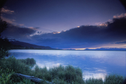
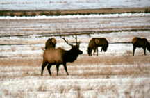
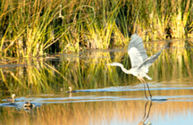

Eastern Idaho Photographic Society


©Roger Heng Oxbow Grand Teton National Park
The area has a number of Federal and State wildlife refuges within 3 hour drive of Idaho Falls.
We are located in a flyway for many waterfowl and shorebirds. Some of these birds stay and nest in the refuges
The refuges provide sanctuary for a variety of wildlife that can be photographed. The Photographs of owls, deer, moose, elk,
swans, eagles, red foxes, sandhill cranes, coyote, and porcupine are some of the wildlife. Many birds fly thru the refuges and a few nest.
The refuges provide bird lists and some are at the refuges.
Bear Lake Bird List |Camas Bird List |National Elk Refuge Bird List |Red Rock Lakes Bird List |Bear River Bird List
Where and when to photograph birds form Idaho Falls Post Register March 21, 2013.
You can contact the refuges for best times to view birds. Refuges also close some areas for bird nesting.
 |
 |
 |
 |
Minidoka National Wildlife Refuge |
Eagle: Farmington Bay |
Porcupine: Camas |
Red Rock Lakes a Storm |
© Roger Heng 2010 |
© Tim Sommers |
© Roger Heng |
© Sue Heng |
Minidoka National Wildlife Refuge ,Rupert, ID |
Farmington Bay Waterfowl Mgt Area,Farmington, Utah |
Camas National Wildlife Refuge Hamer, ID |
Red Rock Lakes Nat Wildlife Refuge Lakeside, MT |
 |
 |
 |
 |
Elk Refuge |
Market Lake |
Bear Lake |
Camas |
© Roger Heng |
© Roger Heng 2008 |
© Sue Heng |
© Ray Thomas |
National Elk Refuge Wildlife Refuge Jackson, WY |
Market Lake Wildlife Refuge, Roberts, Idaho |
Bear Lake National Wildlife Refuge,Montpelier, Idaho |
Camas National Wildlife Refuge Hamer, ID |
Photo Locations and Other Links
National Parks| Monument and Reserve| Bureau of Land Management| National Forests| Near By Ghost Towns| Near By Wildlife Refuges| Weather| Sunrise/Sunset Times | Photographers/Photo Clubs
Photographs Copyright© Photographer, Owner, or Eastern Idaho Photographic Society. Photographs
may not be reproduced in any manner without written permission.
Web Page Copyright© 2011 Eastern Idaho Photographic Society